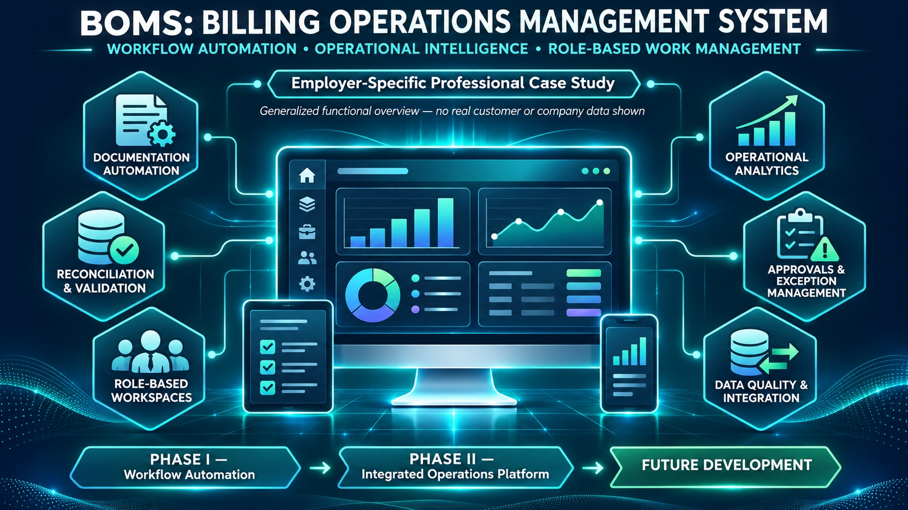

Unstructured intake
Billing work routed through email and manual tracking created limited visibility, inconsistent follow-up, and time-consuming administrative review.
A structured workflow control model for replacing inbox-driven billing work with standardized intake, configurable routing, status tracking, compliance visibility, and operational reporting.

Billing work routed through email and manual tracking created limited visibility, inconsistent follow-up, and time-consuming administrative review.
Requests are converted into standardized records with defined ownership, status, routing logic, and reporting fields.
Designed around SharePoint lists, Power Automate flows, Power BI visibility, and configurable business rules.
Improves workload transparency, reduces manual review, supports threshold monitoring, and creates a repeatable process model.
BOMS is designed as a layered workflow system. The key value is not just automation; it is converting operational activity into structured, reportable, governable work.
| Control | Purpose |
|---|---|
| Required fields | Prevents incomplete billing records from entering the workflow. |
| State model | Defines where each item sits in the lifecycle and what action is needed next. |
| Configurable routing | Reduces hard-coded logic and supports maintainable assignment rules. |
| Aging thresholds | Highlights overdue or approaching-deadline billing work. |
| Reporting dataset | Turns transactional work into measurable operational performance. |
The repository contains architecture, workflow, analytics, governance, and roadmap documentation supporting the case study.
Layered design for intake, routing, enrichment, status handling, and reporting integration.
Explains how request data moves from intake through structured records and reporting outputs.
Defines lifecycle stages, status transitions, and queue behavior for billing work items.
Documents the reporting layer used to monitor backlog, workload, production, and exceptions.
Outlines control, maintainability, retention, and operational reliability considerations.
Shows future enhancements for scaling workflow automation and enterprise reporting.
BOMS demonstrates business process analysis, requirements translation, workflow architecture, Microsoft Power Platform design, operational controls, and reporting-readiness.
This project supports roles involving business systems analysis, workflow automation, process improvement, operational reporting, and billing/revenue operations.